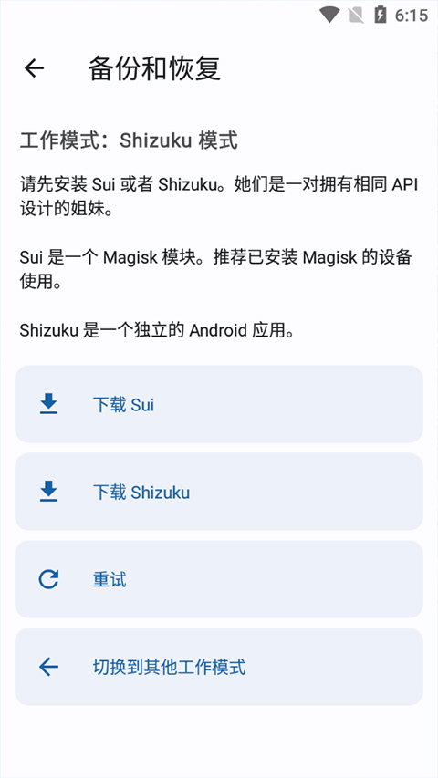

App Ops 迭代史：一个让 Android 拿回控制权的工具是怎么长成的
App Ops 从默默无名到 Android 权限圈的标配，它的版本迭代里藏着一条清晰的主线：让用户真正掌控每一项敏感权限。4.0 带来剪贴板监视只是其中一步，回溯这条路能看清它的优先级。
现在打开 App Ops 的最新版本——它的官网上能看到版本更新的完整脉络——首页会列出手机里每一个安装过的应用，点进去能看到十几项甚至几十项权限开关——不是系统设置里那种粗略的"允许/拒绝"，而是更细粒度的四种状态：允许、拒绝、每次询问、忽略。这在今天看来似乎是理所当然的事情，但如果回溯它的版本历史就会发现，App Ops 走到这一步中间踩过不少坑，也放弃过一些东西。
来路：样本文档没写的早期
手头能拿到的文档从 Shizuku 模式和剪贴板监视开始讲起，App Ops 的更早版本信息不多。但这点留白本身就能说明问题：它最初定位是一个系统 appops 层面的读写工具——Android 框架里藏着一套比公开 Runtime Permission 更底层的权限控制机制，但系统设置只暴露了一小部分，App Ops 把剩下的全部挖了出来，底层 appops 参数的详解在appops文档里有完整收录。
早期版本的 App Ops 依赖 Root 才能工作，这是它和 Shizuku 结合之前的状态。Root 门槛高，覆盖用户有限，好在现在官方下载已经同时提供 Root 版和 ADB 激活版。真正让它从小众走向更广泛群体的转折点，是引入了 Shizuku 这条路径——通过 ADB 激活服务，无 Root 设备也能使用完整的 appops 读写能力。这一步的意义不只是"降低门槛"，更像是把 App Ops 从 Root 玩家的玩具变成了任何有电脑和数据线的用户都能用的实用工具。

但 Shizuku 也不是完美的。每次手机重启都需要重新跑 ADB 命令，无线调试虽然能减少插线次数但 Wi-Fi 变化端口也跟着变。于是又有了 DPM 托管设备管理员模式——通过 Island 等应用获得 Device Owner 身份，一次设置长期有效。只是 DPM 模式能力打了折扣：设不了 permission flags，Android 11 上不支持"每次都询问"，备份功能也不完整。
4.0：剪贴板监视是一个信号
样本文档里最明确的版本标记是 4.0——这一版引入了剪贴板监视功能。开启条件挺苛刻：Android 10 以上 + Shizuku 必须是 Root 激活（ADB 激活的 Shizuku 用不了）。功能本身也不复杂：每次有应用读写剪贴板时弹个 Toast 提醒，告诉你谁在操作。
但 4.0 这一步的意义远不止加了一个小功能。它暴露了 App Ops 一直在死磕的一条主线：让用户感知到权限在被滥用。系统层面没有剪贴板读取的权限面板，Android 10 之前后台应用读剪贴板几乎是无限制的——购物 App 偷链接比价、社交 App 读复制的对话内容、金融 App 读密码验证码。App Ops 的做法是先让你"看到"谁在读，再给你一个"直接忽略"的权限开关把这条路堵死。
4.0 之前 App Ops 做的主要是"控制"：把系统 appops 的开关全暴露出来，让你对每个应用的每项权限设四种状态。4.0 加的"监视"是另一个维度——在开关之外给你实时的行为反馈。这个思路后来还在延续，比如后台运行的实时告警、传感器访问的静默提醒，都是"先看见再决定"这条逻辑的延伸。
两种模式的取舍：团队一直在死磕什么
从 Shizuku 到 DPM 再到 App Ops X，看 App Ops 的迭代路径能很清楚地看到团队的优先级排序。
第一优先级永远是能力完整度。Shizuku 模式之所以被官方推荐、功能迭代优先，核心原因就是它能同时读写 appops、runtime permission 和 permission flags 三者——这是 DPM 模式做不到的。App Ops X 作为独立扩展应用出现，也是因为普通第三方应用权限不够、控制系统应用需要更高权限，那他们就单独做一个组件来补这块短板。
第二优先级是渐进式覆盖。不是一开始就要求 Root，也不是只做 Shizuku 一条路，而是有 Root 给你 Root 激活、没 Root 给你 ADB 激活、嫌 ADB 麻烦还有 DPM 兜底。每条路都有代价（Root 有门槛、ADB 重启要重跑、DPM 能力打折），但每条路都能让你用上核心功能。这种不卡死单一路径的策略，让 App Ops 在不同设备条件下都能有立足之地。
第三优先级才是易用性。剪贴板监视的开启条件苛刻（Root 激活的 Shizuku 才行）、ADB 激活步骤要插线跑命令、App Ops X 还要单独装一个 APK——这些地方都没做"傻瓜化"处理。能感觉到团队把精力主要放在"能不能做到"上，"能不能更方便"留到了后面。

反过来看，哪些东西一直没做？批量导入导出虽然有备份功能但界面入口不显眼；没有云同步，换手机设置得手动迁移；DPM 模式的能力缺陷没补、反而迭代持续偏向 Shizuku 一侧。这些"非核心"的体验缺口一直留到现在也没见优先级提上来。
预判：从迭代规律看下一步
照这个路线推，App Ops 的近期走向大概率还是延续"能力优先、覆盖优先、易用性靠后"的节奏。
App Ops X 这条线应该会继续加强——系统应用的权限控制目前只解锁了基本的 appops 读写，更深层的系统参数修改还有空间。剪贴板监视开启条件里那个"必须 Root 激活 Shizuku"的限制，如果团队能找到方案让 ADB 激活也能用，会是一个不大但很实用的迭代点。
另一个可能的方向是和 Shizuku 本身的绑定更深。Shizuku 最近几个版本也在迭代无线调试的稳定性，如果 Shizuku 能做到开机自启 ADB 连接，App Ops 用户最大的痛点（重启后重跑命令）就没了，这比 App Ops 自己做任何易用性改进都管用。
不太可能很快看到的是跨设备同步、一键式初始化向导这类"更像商业化产品"的功能——从历史迭代来看，团队的重心一直不在这上面。
App Ops 的安装包和配套文档同步发在三个代码托管平台上：GitHub 适合海外网络、Gitee 国内访问更快、GitCode 作为双备份。